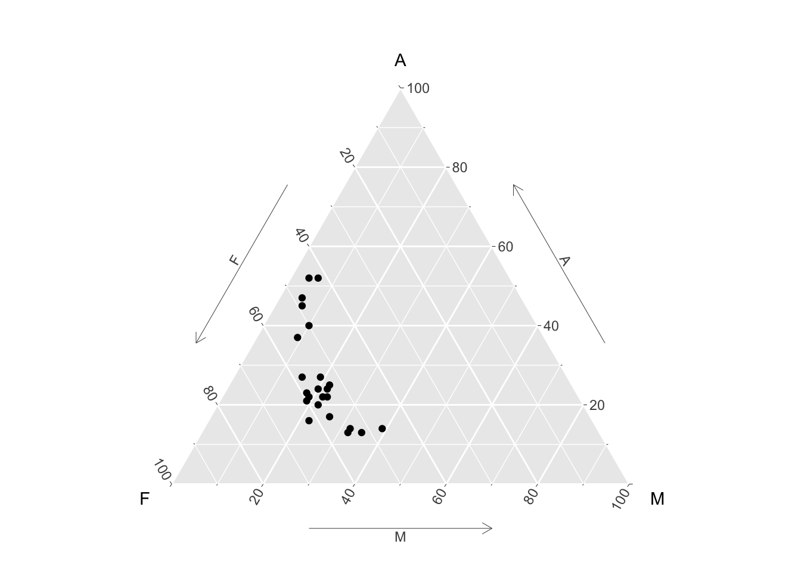

4.5 Plots for more complex data structures
The types of plots discussed so far are very useful when data lie on standard scales, in one or two dimensions. The structure of data can be more complex, with the need to use graphical methods which adapt to the underlying characteristics. This section gives some examples.
4.5.1 3D data
Plots of the gulls data included scatterplots of pairs of measurements, coloured by Sex, which suggested that classification of males and females from these measurements looks feasible. It is possible to explore this further in three dimensions. The rgl package provides a connection to the OpenGL
system for displaying three-dimensional objects. The rp.plot3d function from the rpanel package provides a means of creating a 3d scatterplot. The mouse can be used to rotate and zoom the display. (A plot of this type is also available from the plot3d function in rgl.)
Notice that the call to the rp.plot3d function is placed inside a with statement. This is a convenient way of allowing access to the variables inside the gulls dataframe, avoiding the need to use references such as gulls$Weight.
gulls <- mutate(gulls, clr = case_match(Sex, 'Male' ~ 'green', 'Female' ~ 'blue'))
with(gulls, rp.plot3d(Weight, Wing.Length, Head.Length, col = clr))
rgl::rglwidget()
This shows almost complete separation between males and females in these three measurements, although if you examine the plot carefully you will see three females with large values and one male with very small values. Perhaps these birds have been wrongly labelled - or perhaps they are simply very large/small for their sex.
4.5.2 Circular, spherical and compositional data
Spherical data sits on the surface of a sphere. Latitude and longitude positions of locations on the surface of the earth are a simple example.
## Package 'sm', version 2.2-6.0: type help(sm) for summary informationlat <- rnorm(50, 10, 15)
long <- c(rnorm(25, 300, 15), rnorm(25, 240, 15))
par(mfrow=c(1,2))
sm.sphere(lat, long)
sm.sphere(lat, long, sphim=TRUE, kappa=15)
par(mfrow=c(1,1))
Compositional data consists of vectors of proportions (or percentages) which sum to 1 (or 100). The special issues in analysing this kind of data are discussed by Aitchison (1982). In the special case of three proportions a plot called a ternary diagram can be created, using the special properties of the equilateral triangle. The ggtern package allows this kind of plot to be created in the style of ggplot. Here the percentages of different chemical compositions in lava samples from Skye are displayed, along with the contours of a density estimate.
library(ggtern)
data(SkyeLava)
ggtern(SkyeLava, aes(F, A, M)) +
geom_point() +
geom_density_tern() +
theme_showarrows()
Other packages include compositions and Compositional.
See Van den Boogaart and Tolosana-Delgado (2013) for more details of the theory.